Take aim and shoot for your goals.
This was our first real project as a team, a fitness app built from a blank canvas, four of us figuring out the process together, one decision at a time. This is the story of how that came together.
Scroll to begin ↓"Everyone on the team showed up ready to work. We just weren't all starting from the same place. My job was to close that gap quietly, not make it the headline."
The Problem
Here's where we started. Most people who want to get healthier already know it. The thing standing between them and a better routine usually isn't motivation. It's logistics. The gym is open, sure, but finding the hour is its own negotiation every single day. Meals get decided in the middle of a busy afternoon, not during some calm planning session on a Sunday. And if a diet plan exists at all, it's living in someone's head, half-remembered and rarely followed.
That tracked with what our interviews told us. People had some version of a workout habit going. Almost none of them had a diet plan running alongside it, and the two never talked to each other. Plenty of apps already cover this space, but most of them pick a lane: tracking or nutrition, rarely both at once, and almost never as a single connected experience. We wanted to build the version that treats them as one habit instead of two separate chores.
The name came from there. Chiron, in Greek mythology, was the centaur who trained heroes, half human, half horse, equal parts teacher and healer. Our tagline followed naturally: "Take aim and shoot for your goals." Both stuck with us through every design review that followed, because they kept reminding us what we were actually building. Not a tracker. A coach.
Research & Discovery
I want to be upfront about what this research was and wasn't. It was a bootcamp team running its first sprint, six interviews and a short survey, on a short timeline. It wasn't a validated study, and I'm not going to dress it up as one. What it gave us was a real pattern worth acting on, and we treated it that way: a strong signal to point the design, not proof to hide behind.
We ran six interviews and sent out a survey, both circling the same question: how do people actually manage their workouts and their diet, and where does that process fall apart? The answer kept repeating itself across nearly every conversation.
Gym access wasn't the obstacle here. Time and consistency were.
The workout side existed in some shape. The diet side almost never did.
Not because they didn't care. Because there was no easy place to do it.
Which raises the stakes on consistency. Stress relief only helps if you actually show up.
One line came back clearer than anything else we heard. People found it hard to make time for working out and eating well at the same time. Not one or the other on its own. Both, together, inside a life that wasn't built around either.
User Persona
We pulled one composite persona out of everything we heard in those interviews. Anthony Walker became the person we kept building for: driven enough to want consistency, busy enough to keep losing it, and short on exactly the fitness knowledge that would let him fix it on his own.
Anthony Walker
"A healthy body and mind starts with great habits."
Goals
- Live a healthy life and maintain good physique
- Follow an organized set of workout routines
- Keep track of diet and build body mass
Pain Points
- Loses track of his diet, ends up eating fast food
- Inconsistent with his workout routine
- Doesn't have much fitness knowledge to fall back on
- Struggles to find time to actually work out
Define & Ideate
The real constraint of this phase had nothing to do with disagreeing on features. It was the gap in experience sitting between us. Three of the four of us were stepping into a formal design project for the first time. I wasn't. That kind of asymmetry shapes how a team actually works together more than most case studies admit, and I'd rather describe it honestly than smooth it over.
I'd already worked with Figma and been through the UX process before the bootcamp started. That let me move faster, form opinions earlier, and see a few steps ahead of where the rest of the team could see yet.
My teammates picked up the tools fast and worked hard. What they hadn't built yet was the instinct for what comes next in a real design process. That's not a knock on them. It's just what a first project looks like, for anyone.
My job wasn't to design the app for them. It was to teach the process as we went, so they could make real calls beside me instead of just carrying out what I'd already decided.
Looking at the competition told us what we didn't want to rebuild. We studied three established players in the space and found the same gap across all three of them. They all had solid tracking tools, but none of them made working out and eating feel like one connected experience. That gap is where Chiron could actually live.
Each of those three had programs, scheduling, and some mix of nutrition and workout tracking on offer. None of them made the two feel designed for the same person living the same day. That open lane is what Chiron was built to fill.
From there we moved into feature prioritization. Not everything the research surfaced earned a spot in the prototype. What stayed was whatever pushed someone like Anthony from "I want to be consistent" to actually opening the app and seeing today's workout next to today's meal.
- Workout videos with sets, reps and rest intervals built in
- A diet planner split into tabs by eating style: Vegan, Veggie, Meat, Classic
- Progress tracking with a visual ring indicator
- Recommended food plans based on someone's current diet
- A workout regimen tied to a real calendar
- Suggested recipes with full prep instructions, step by step
The decision that ended up defining Chiron more than any single screen was the survey-driven onboarding. A new user answers a few questions about where they're at, and the app uses that intake to recommend a starting program built around them specifically. You tell Chiron where you are. Chiron tells you where to start. That mentor-like first impression stayed with us from the earliest sketch all the way through the final hi-fi screens.
User Flow
The onboarding sequence had one job: earn the right to personalize before asking the user for anything. Nobody lands on a generic dashboard here. You arrive at a coaching screen that explains what Chiron actually does first, then move into a quick survey that lines your program up with where you're starting from.
Download → Splash screen
The brand moment up front: "Take Aim And Shoot For Your Goals." Tone is set before anything else happens.
Coaching screens 1 & 2
Chiron walks through the two things it actually does, diet management and workout planning, before asking for anything back.
Login / Sign up
Email, name, and password, or a quick connect through Apple, Google, or Facebook. Account creation only comes after the pitch has already landed.
Intake survey
Fitness level, goals, time available. The app reads the answers and recommends a starting program. This is the moment Chiron starts acting like a coach instead of a tool.
Home screen
A personalized greeting, "Hi Anthony," and the week laid out at a glance. View Progress and today's workout are both one tap away from the moment the screen loads.
Set diet & set workout
Two tracks running in parallel, both reachable from the same bottom nav, built to feel like one experience instead of two apps stitched together.
Track fitness journey
Progress rings, a calendar history, and ongoing meal and workout logging. This is the long loop that turns one good session into an actual habit.
Design Decisions
Paper first, then Figma
We started with hand-sketched wireframes before anyone opened Figma. Part of that was good process, and part of it was practical. With three teammates still learning the software in real time, locking the structure down on paper meant Figma got used to build a layout the team had already agreed on, instead of four people designing against each other inside the same file. The sketches covered the whole flow: splash, coaching screen, login, sign up, survey, home, workout, diet, and schedule.
The Figma file, under Group Chiron's "Drawn Wireframes" page, holds the full hi-fi prototype from splash through schedule. Every screen named in the flow above lives there. We sketched the lo-fi version on paper before touching Figma at all, so there's no lo-fi Figma page to point to. The paper sketches came first. What's in Figma is the finished hi-fi.
Dark, focused visual tone
The hi-fi prototype leans into a dark, high-contrast look on purpose. Fitness apps live on a phone screen during a workout, which usually means harsh gym lighting, daylight outdoors, or whatever ambient light happens to be in someone's living room. A dark interface with a clear type hierarchy holds up better across all of that than a flat white screen does. The mood matched what the research told us, too. For these users, a workout wasn't a productivity task. It was a release. The interface needed to feel that way, not like a spreadsheet with extra steps.
Personalization before content
The survey-to-recommendation flow is the decision I stand behind most, looking back. Most fitness apps hand you a content library on day one and let you sort it out yourself. Chiron's bet was the opposite: a new user shouldn't have to already know what they need. The app figures that out from the intake survey and hands them a starting point. The coaching screens before sign-up exist for the same reason. They make the case for the app before asking for a commitment, which is an easier ask for anyone who's already burned by a fitness app that promised something different and didn't deliver.
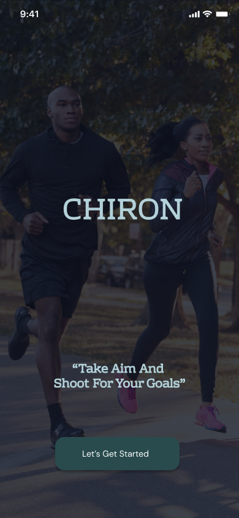
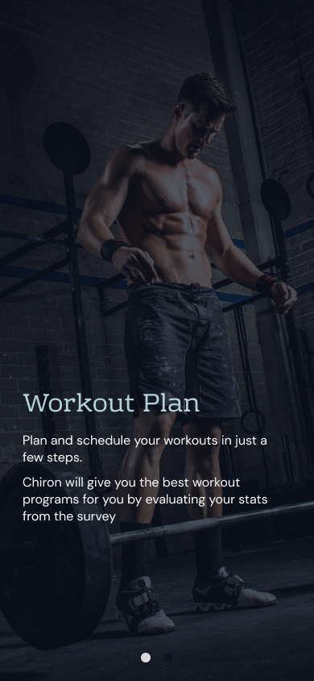
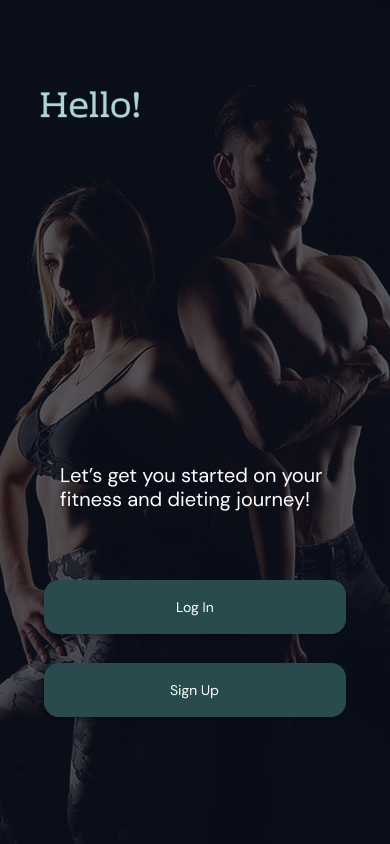
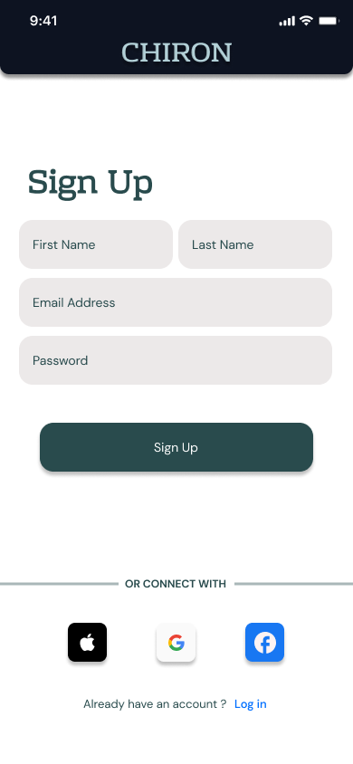
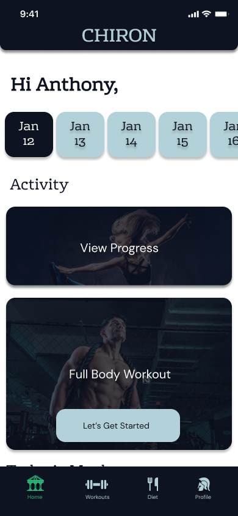
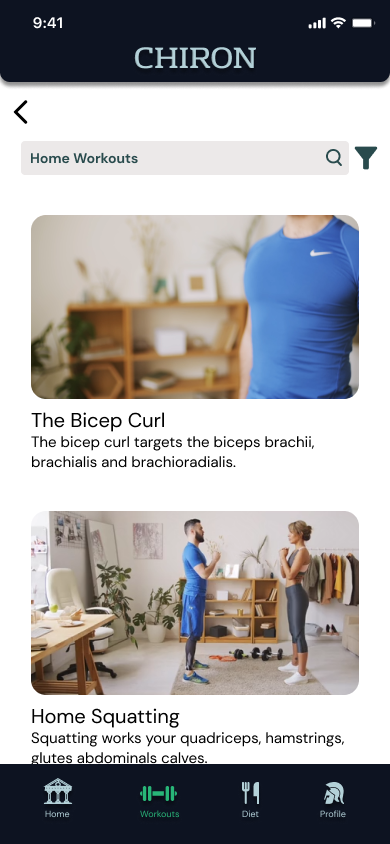
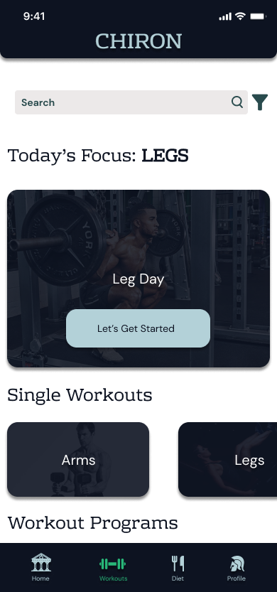
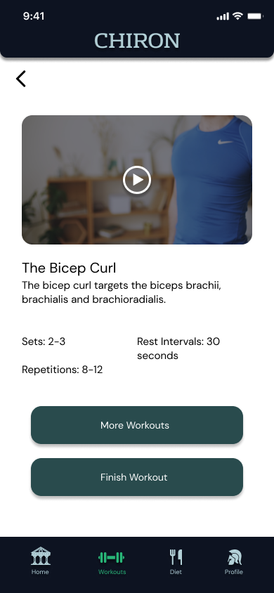
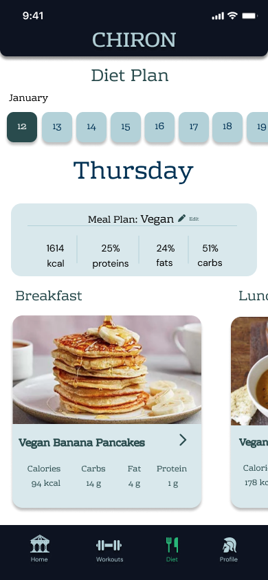
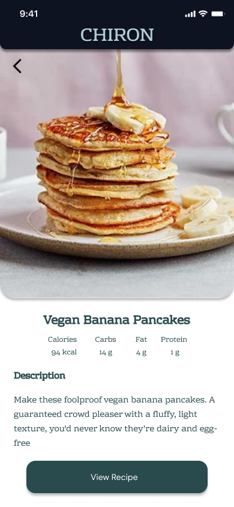
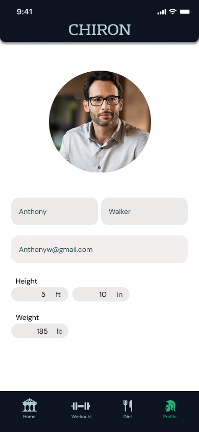
Putting It in Front of People
We tested the hi-fi prototype against three concrete tasks. We weren't trying to confirm it looked good. We wanted to find out where the experience actually broke down once someone tried to use it: setting up an account, finishing a workout, and choosing a diet plan.
Create an account
Every participant got through sign-up with little to no friction.
Select and complete a workout
Users found their way to and through a workout without needing any guidance from us.
Pick a diet plan
The diet-style filter tabs, Vegan, Veggie, Meat, Classic, were understood right away and used correctly.
All three tasks went through cleanly across every participant. For a first bootcamp prototype, that means the core flows held up, which is the bar a first project actually needs to clear. It doesn't tell us whether anyone would have opened the app again the next day, whether the onboarding survey produced recommendations people actually trusted, or whether pairing workouts with diet felt meaningfully different from just having two separate features sitting next to each other. Those questions need a second round of testing, with more time than we had on this one.
Results & Reflection
Chiron was a learning exercise first, and I'd rather describe it that way than oversell it. We still ran a real process: interviews, a persona, a competitor audit, paper sketches, digital lo-fi wireframes, a hi-fi prototype all four of us touched, and usability testing that confirmed the core flows worked. None of that happened by luck. The prototype also carries the rougher edges you'd expect from a team learning the tools and the discipline at the same time as building the product. The full prototype lives in Figma (Group Chiron), every screen from splash through diet plan included.
On the team dynamic: the experience gap didn't hold the project back. If anything, it made the process more deliberate. Explaining the reasoning behind a decision meant I had to actually understand it myself first, and that sharpens your thinking fast. What I'd change is building in more explicit checkpoints, real moments where I stopped and asked the team whether the pace was working for them instead of assuming it was. Moving fast feels easy when you already know the terrain. It's worth checking who's still keeping up.
What I'd do differently: push for a second round of testing focused specifically on the survey-to-recommendation flow, to see whether the "coach" idea actually felt different in practice and not just on paper. All three tasks passed cleanly, but the real question Chiron's design was asking, whether a personalized starting point actually matters to someone, needs users to experience a recommendation they weren't expecting. That test never made it into the timeline we had.
Where we'd take it next: calorie counting built directly into the diet tracker, a wider library of workout videos, and diet tips tied to specific workout days, so the connection between eating and training feels structural instead of just two features placed near each other.